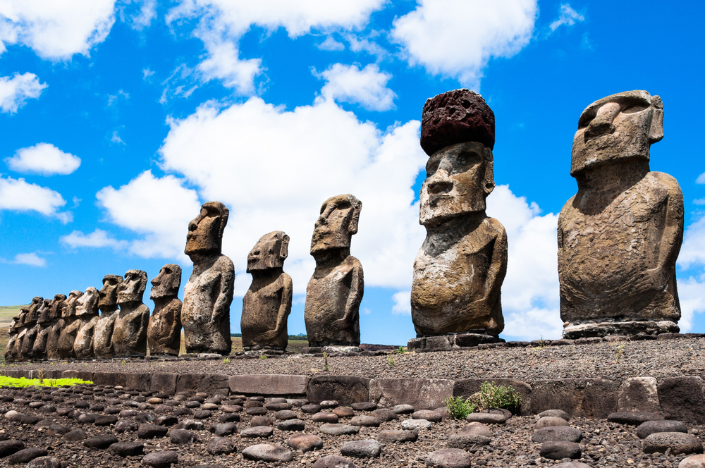
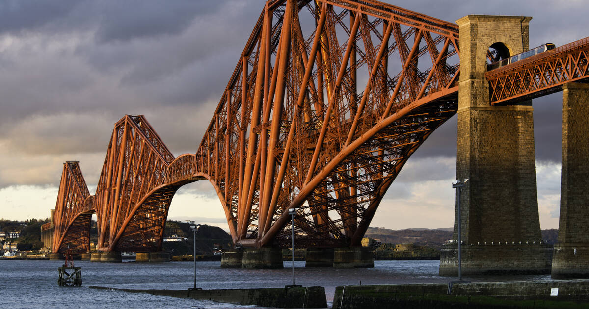
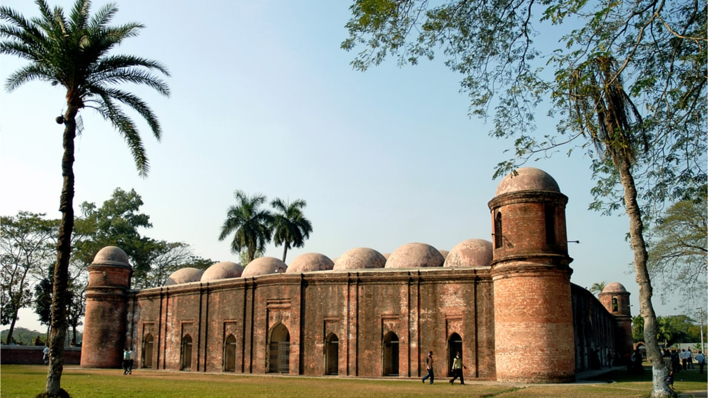
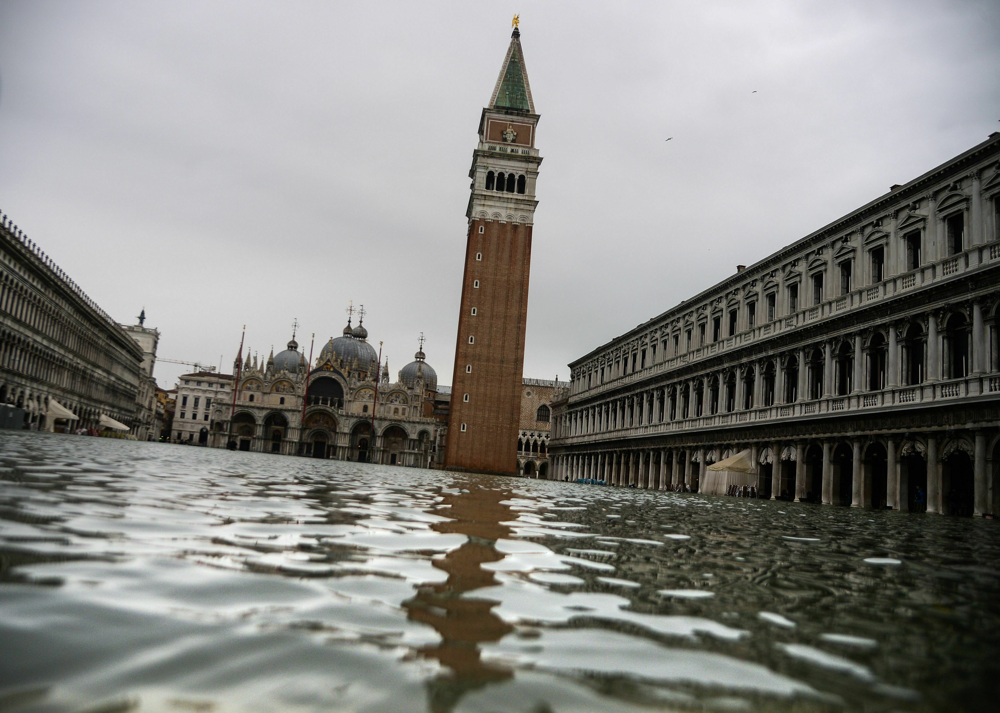
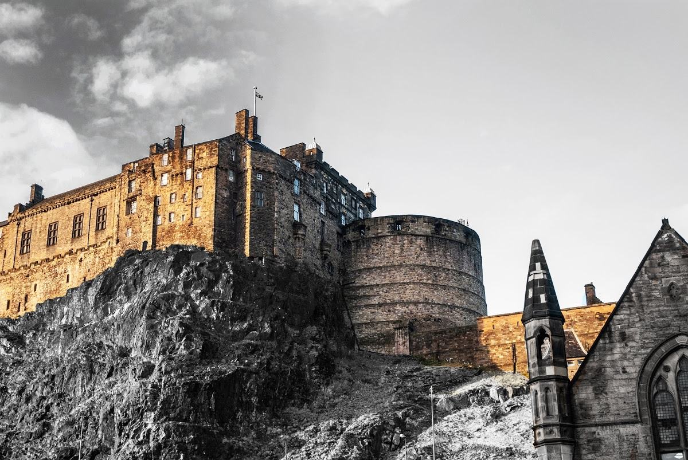

Climate change is threatening our cultural heritage sites, from ancient monuments to historic buildings.
Rising sea levels, extreme weather events, and changing environmental conditions are causing irreversible
damage to these irreplaceable treasures.
Explore the gallery below to learn more about the impact of climate change on cultural heritage sites
Click on the links below the images to learn more about each site and the specific threats they face.

The iconic Moai statues of Easter Island, some standing up to 20 meters tall, face an
increasing threat from rising sea levels. These monolithic figures, created between the 10th and
16th centuries, risk being undermined and toppled by intensifying storm surges and coastal erosion.
Learn
MoreAncient cave paintings in China's Mogao Grottoes, dating back to the 4th century, are
deteriorating at an alarming rate. Increased humidity and rainwater leaks caused by climate change
are leading to salt crystallization on the cave walls, causing paint to flake off these priceless
murals.Learn
MoreSome of the world's oldest cave art, created around 40,000 years ago on the island of
Sulawesi, is being destroyed by climate-induced salt crystallization. Extreme weather patterns,
including intensified monsoon rains and droughts, are accelerating the deterioration of these
irreplaceable Pleistocene-aged artworks.Learn
MoreThe 500-year-old Zhenhai Bridge in Huangshan, Anhui province, a protected cultural site from
the Ming dynasty, suffered significant damage during the 2020 floods in China. This incident
highlights the increasing vulnerability of historical structures to extreme weather events
exacerbated by climate change.Learn
More

The Forth Bridge in Edinburgh, Scotland, an iconic Victorian-era railway bridge and UNESCO
World Heritage site, faces a growing risk from coastal flooding due to climate change. This
engineering marvel, representing a milestone in bridge design and construction, could see its
preservation efforts compromised by rising sea levels.Learn
More

The historic Sixty-Dome Mosque in Bagerhat, Bangladesh, faces damage from rising sea levels
and saltwater intrusion. These changes accelerate the disintegration of bricks and masonry,
threatening this UNESCO World Heritage site.Learn
More

Venice’s historic architecture and canals are increasingly at risk from flooding due to
rising sea levels and extreme weather events. The city’s unique cultural landscape faces an
uncertain future without urgent mitigation effortsLearn
More

Heavy rainfall caused by climate change is damaging Edinburgh Castle's ancient stonework.
This UNESCO World Heritage site exemplifies how extreme weather is impacting historic urban centers
worldwideLearn
More